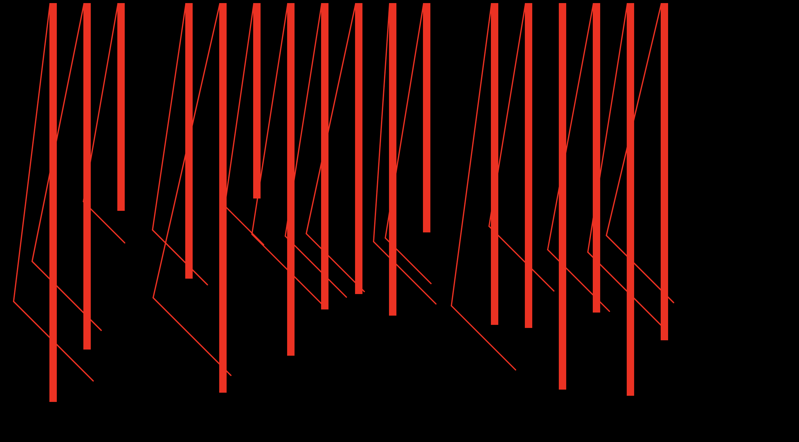
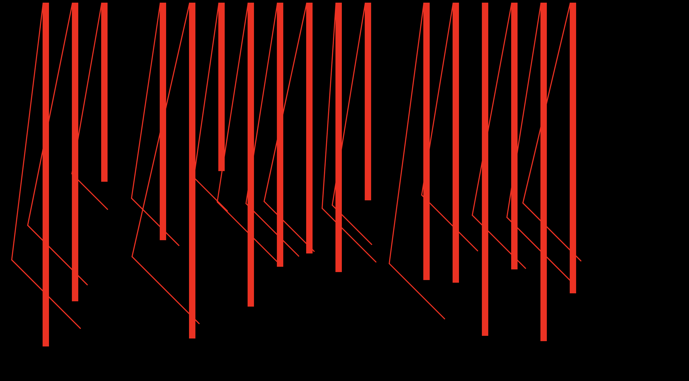

Input Pierre 6.4.22
Notes en vrac:
1.
Shop online: fais ton personnage en choissisant tes données
Make your own adventures book
Disco Elyseum
Netflix documentary about Instagram
Time Well Spent (Tristan Harris)
https://wellbeing.google/
Discover Weekly Spotify
Rabbit Hole (NYT podcast, incroyable)
Sophie Calle (Prends soin de toi ) hehehe
2.
Qu’est ce qui se passe quand il y a des données qui manquent?
Malika Favre
Georges Perec -– La Disparition
peut etre rgearder des sculpteurs et architectes qui
travaille sur le plein / le vide (Noguchi)
citation: "un seul être vous manque et tout est dépeuplé"
http://yan.vanderme.free.fr/com/comfr.html

Feedback Hanna
Datenbanken exportieren - einfache visuelle Umsetzung (direkt oder api – Ziel JSON file)
Schlaf widerspiegelt sich in der Visualisation (Bsp. Rhythmus)
Idee: mehrere Nächte sind visualisiert, nur eine in Decke umgesetzt
Zoom/Fokus: 1 Jahr – 1 Monat – 1 Woche – 1 Nacht (Frage der Zeitachse)
Salome Rinderknecht TX hslu – generierte Babydecke
Nike Zach Liberman – Marathon durch Sensoren im Schuh visualisieren (data art)
Variantenreichtum der Daten und der Parametrisierung vs.
Einheit der Technik der Strickmaschine
Musikvisualisierungen als Inspiration, experimentelle Musiknotation
Decke ist kein Muss – kann auch anderer Schlafgegenstand/Lied sein (Schlaf Recherche)
alles kann in alles übersetzt werden
 



Feedback Zwischenpräsi:
+ vom Schlafen auszugehen
+ Brücke zum Schlaf machen, indem am Ende ein "Gegenstand" erschaffen wird
+ bereits mit p5 angefangen
+ historisch Stricken mit Computer verbunden
> visuelle Recherche über Schlaf und Nacht machen (Gedichte, Bilder anschauen)
> kulturelle Bedeutung Schlaf?
> Nochmals Zeit nehmen um Endprodukt zu bestimmen. Gibt es eventuell auch etwas, dass emotional mehr Wert hat?
> Daten in Musik umwandeln? (Schlaflied)
> Lernen wie Daten (von FitBit) erstellt/erfasst werden
> Beziehung Schlaf-Maschine - Wir schlafen die Maschine arbeitet, in dem sie die Daten erfässt
> Interessante Möglichkeit: Handgezeichnete Illustrationen mit generischer Gestaltung mixen
> API FitBit
History of sleep
https://www.news-medical.net/health/History-of-Sleep.aspx
–
ganz ähnliches projekt
https://www.cell.com/patterns/pdf/S2666-3899(20)30046-5.pdf
–
Laurie Frick
Installation
https://artcritical.com/2011/02/21/laurie-frick/
–
Capturing the Development of Internal Representations in a High-Performing Deep Network for Sleep Stage Classification
https://link.springer.com/article/10.1007/s42979-021-00697-3
–
Sleep bizarrness
Hence, it was this need that inspired the present study, which examined two specific types of bizarreness: size and shape phenomenal distortions in dream images. The empirical data available to date on the frequency of bizarreness
in oneiric activity have shown a broad variability both within and across sleep stages (Natale & Esposito, 2001), especially in the most studied stages of REM and NREM-St.2. Specifically, data collected from different sleep stages have yielded estimates
of bizarreness ranging from 33% to 43% in Sleep Onset (SO), from 47% to 79% in St.2; from 50% to 54% in Delta sleep (SWS), and from 60% to 90% in REM sleep (for a detailed review, see Colace, 2003). It is not possible, however, to extract the specific
weight of shape and size distortions from these general quantitative data. In fact, from a mental processing perspective, bizarreness is explained as a whole, and is generally considered as “any events outside the conceivable expectations of waking
life” (Domhoff, 2005).
https://www.sciencedirect.com/science/article/pii/S1053810006000584
–
Marina Abramovic: Sleeping Exercise. Fondation Beyeler at Art Basel Miami Beach
–
fragility
unconscious
This inactive state contains so many connotations, evokes a large array of emotions, and holds an abundance of internal activity